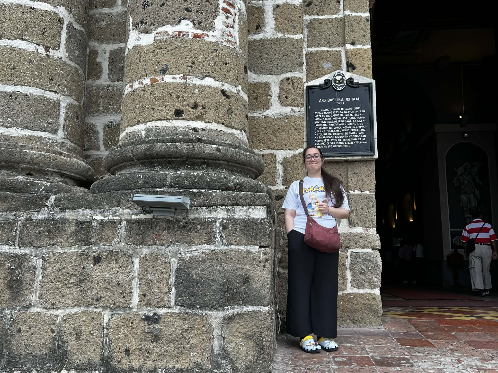
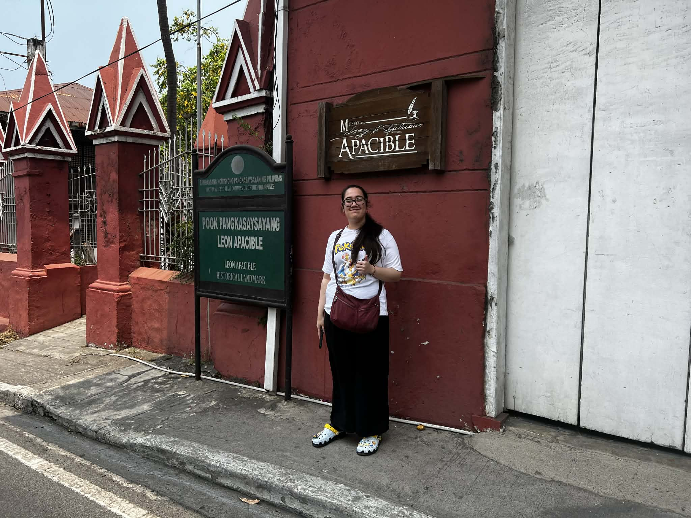
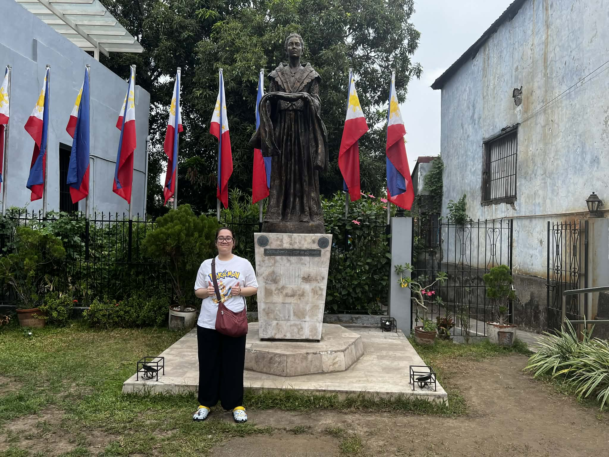
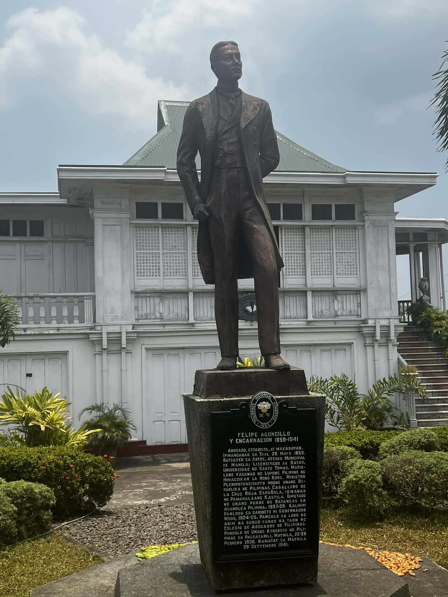
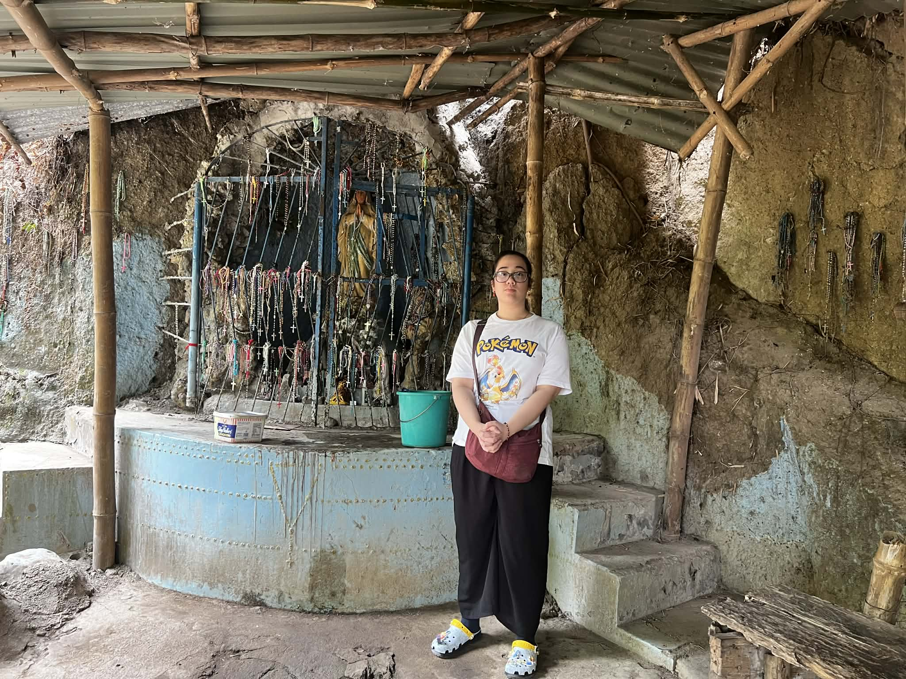
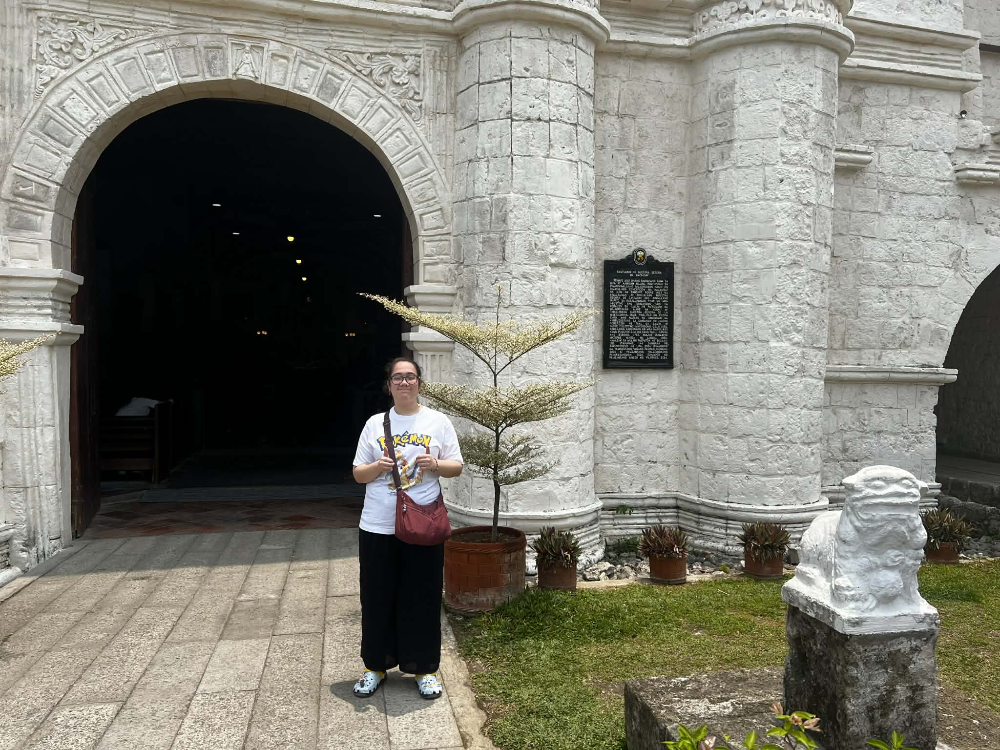
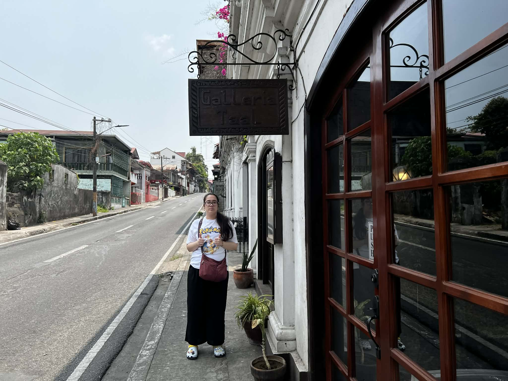
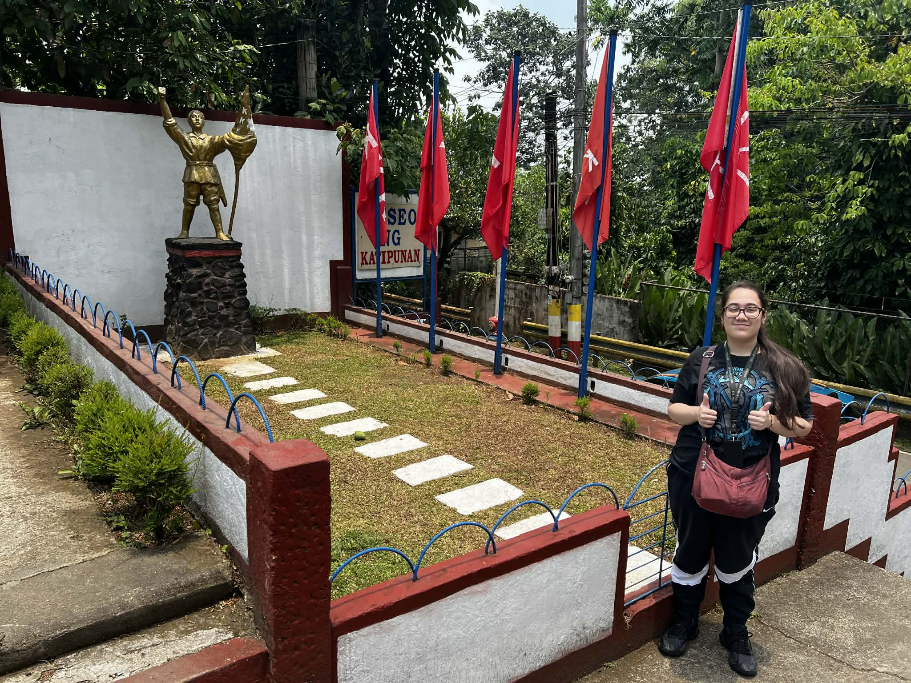
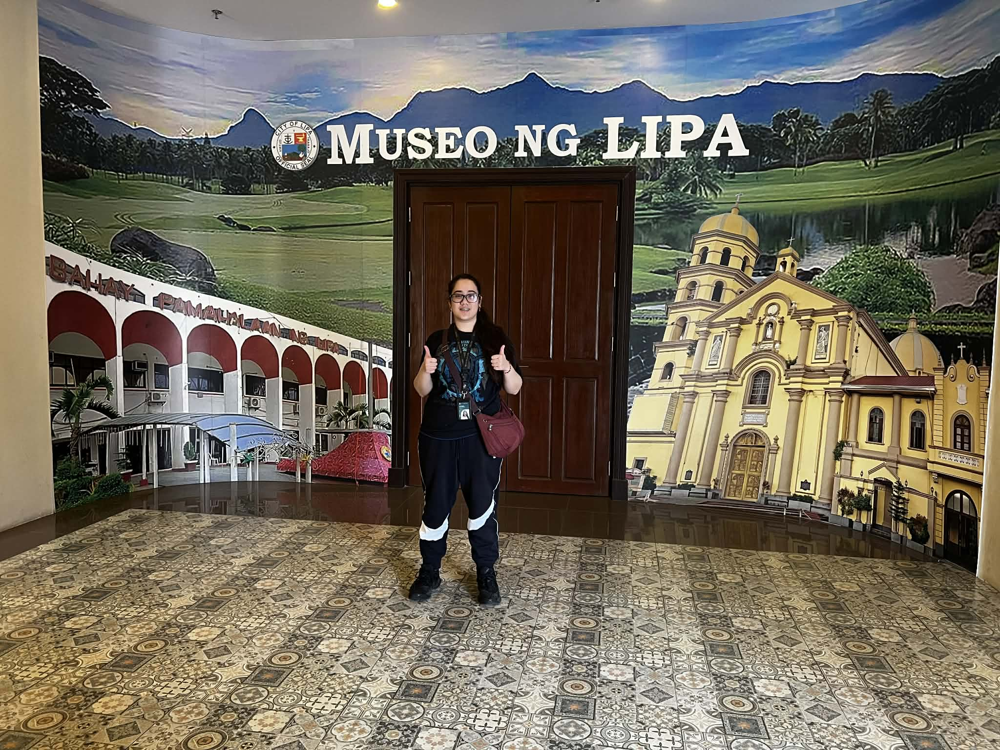
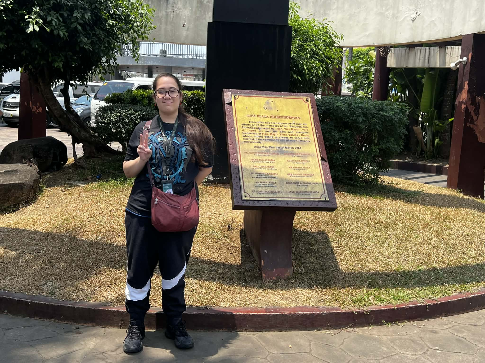

The Philippines is rich in history, filled with centuries-old churches, ancestral houses, and important landmarks that reflect the country’s colonial past and cultural identity. From Spanish-era towns to revolutionary sites, these places tell stories of faith, resilience, and the struggle for independence that shaped the Filipino nation.

The Minor Basilica of Saint Martin of Tours, commonly known as the Taal Basilica, is recognized as the largest Catholic church in Asia. Completed in 1865, it stands as a symbol of the deep religious devotion of the people of Taal. The structure replaced earlier churches destroyed by eruptions of Taal Volcano. Its massive size, elegant Neoclassical design, and historical importance earned it recognition as a National Historical Landmark.

Casa Apacible is the ancestral home of Leon Apacible, a Filipino patriot and close associate of Emilio Aguinaldo. The house played a significant role during the Philippine Revolution, serving as a meeting place for revolutionary leaders. Today, it has been converted into a museum showcasing artifacts, documents, and memorabilia that highlight the town’s role in the fight for independence.

This museum honors Marcela Mariño Agoncillo, known as the "Mother of the Philippine Flag." She helped sew the first Philippine flag in Hong Kong in 1898. The house preserves personal belongings, historical artifacts, and exhibits that tell the story of her contribution to Philippine independence and national identity.

This mansion is associated with Felipe Agoncillo, the first Filipino diplomat who represented the Philippines abroad during the revolutionary period. The house reflects the wealth and lifestyle of prominent families during the Spanish era, while also highlighting the important diplomatic efforts made to gain international recognition for the country.

The Sta. Lucia Well is believed by locals to have healing properties. According to tradition, the well is connected to the story of the apparition of Our Lady of Caysasay. Pilgrims visit the site to pray and collect water, believing it brings blessings and cures. It remains an important spiritual destination in Taal.

The Archdiocesan Shrine of Our Lady of Caysasay is one of the oldest Marian shrines in the Philippines. It is known for miraculous stories linked to the image of the Virgin Mary discovered in the 17th century. The shrine attracts pilgrims from all over the country and remains a symbol of strong Catholic faith.

Galleria Taal is the first camera museum in the Philippines. It houses a vast collection of antique cameras from different parts of the world. The museum highlights the evolution of photography while preserving the heritage of Taal through visual storytelling and historical documentation.

The Museo ng Katipunan showcases the history of the Katipunan, the secret revolutionary society that fought against Spanish rule. Exhibits include weapons, documents, and narratives that highlight the bravery of Filipino revolutionaries who fought for freedom and independence.

Museo ng Lipa preserves the cultural and historical heritage of Lipa City. It features artifacts from the Spanish period, religious items, and exhibits about the city's rise as a center of coffee production during the 19th century.

Plaza Independencia is a historic public square that serves as a reminder of the country’s struggle for independence. It is often used for cultural events, gatherings, and commemorations, making it an important social and historical landmark in the community.